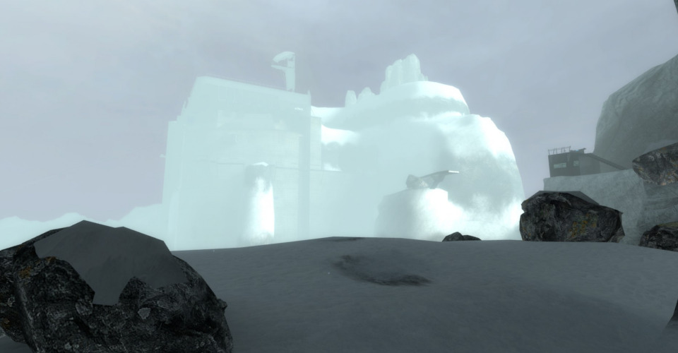

Outland Peak
Explore a Combine outpost high in the mountains...
A map created for the RunThinkShootLive Ville level design competition for Half-Life 2: Episode 2. The competition required designing a map with four different segments.
Discover Antlion caves and a new snow-covered environment as you infiltrate a Combine outpost.
Released: January 2015
Download this map and see reviews here.